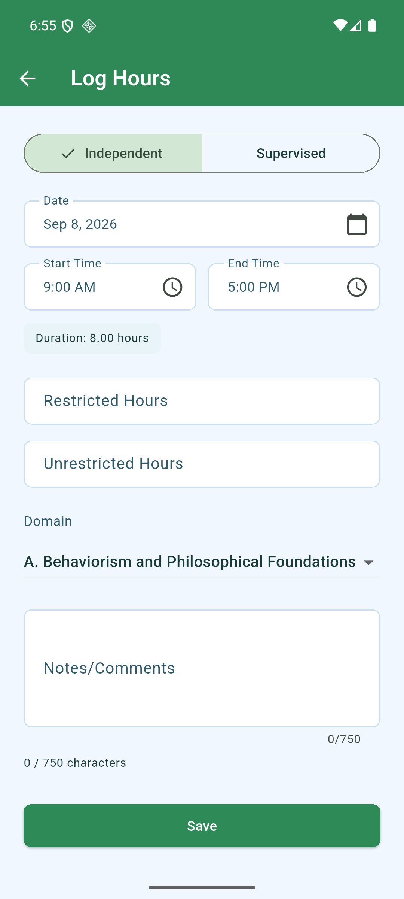
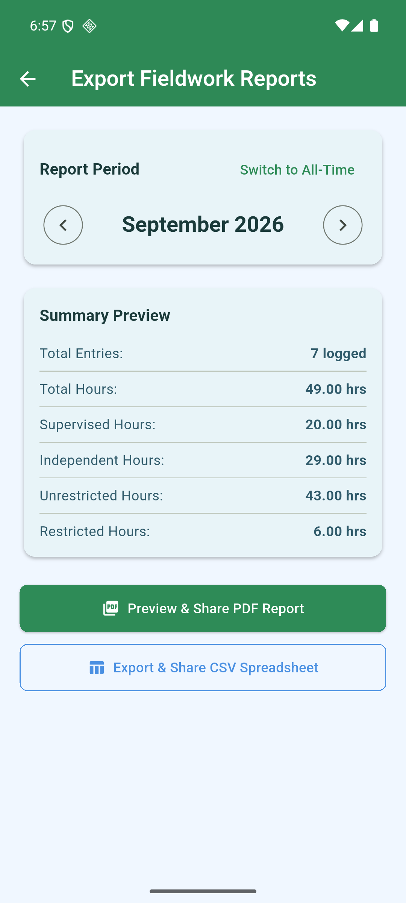

How FieldMate works
From onboarding to an exportable report: what FieldMate asks for, and what it does with it.
1. Set up once: profile, supervisor, employer
Each step only asks for what the next one needs. Your profile holds your name, BACB ID, education and pathway. Your supervisor entry holds their name, credential (BCBA or BCBA-D) and BACB ID. Your employer is where the fieldwork happens. All three are attached to your entries and reports automatically.
2. Two pathways, configurable thresholds
Choose Standard (2,000 hours, 5% supervision) or Concentrated (1,500 hours, 10%). The thresholds are configurable, so when the BACB updates its requirements you can update the numbers in the app. For the current rules, check the BACB's own documents.

3. Log each entry: supervised or independent
Pick a domain, mark the entry supervised or independent, and enter the hours. For supervised entries you also record observation minutes and the supervision format. Restricted and unrestricted time is tracked per entry, and a confirmation step stops minutes from being mistaken for hours.

4. The ratio is checked as you go
FieldMate does the percentage maths: the dashboard shows progress toward your pathway total and your supervision percentage, and checks the ratio against every entry. The restricted/unrestricted caps are tracked automatically.
5. A history you can audit
Every entry is listed by date with its hours, supervision format, supervisor and domain, so you can find and fix a mistake before anyone else sees it.

6. Export when your supervisor asks
Generate a dated PDF or CSV, split by domain and hour type. Generating the report happens on your device, and you share it with your device's share sheet, so we never receive a copy.

7. Local-first, with optional backup
Your data lives in a database on your device. Use a PIN or biometric lock if you wish. Optional Google Drive backup stores data in FieldMate's private app-data area of your own Drive, and is off by default. FieldMate recommends keeping an independent backup, such as an exported PDF or CSV, in addition to the local database.
Android, closed testing. Email us for tester access. Not affiliated with or endorsed by the BACB.